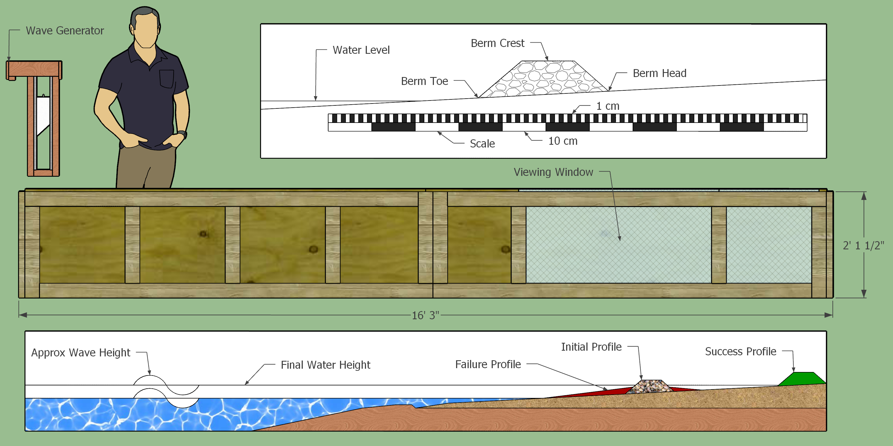
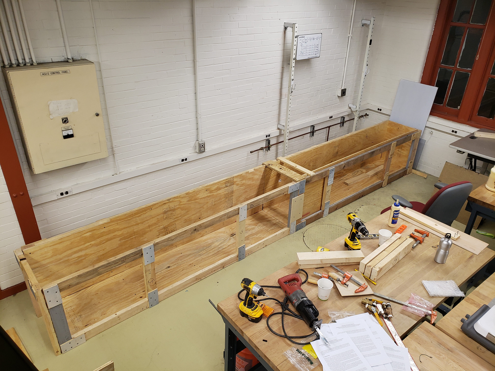
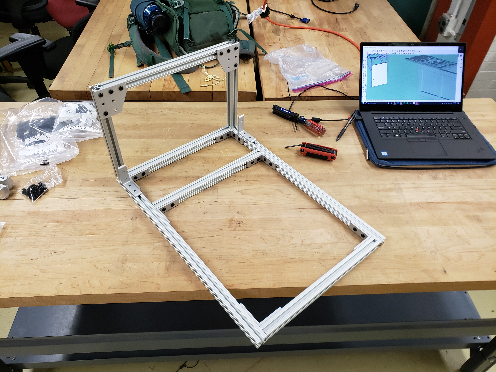
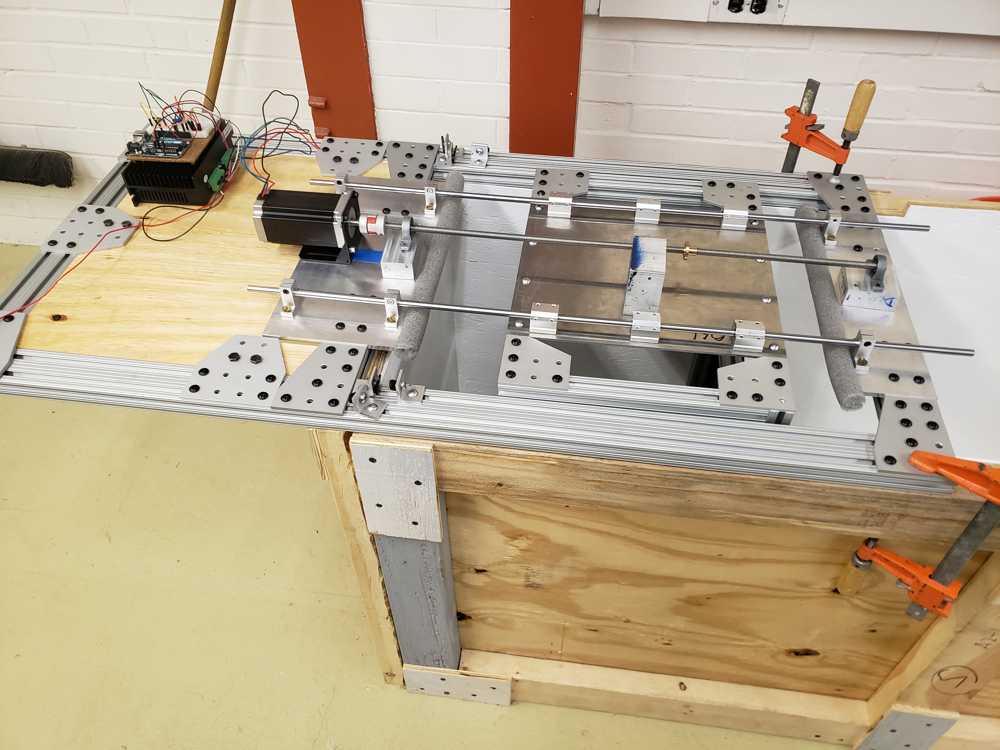

Publications
| KB Kramer, GJ Wang (2021) Social distancing slows down steady dynamics in pedestrian flows. Physics of Fluids 33 (10), 103318 |
Posters

In the summer of 2021, I worked with Professor David Rounce on validating the accuracy of SAR imagery-derived transient snowlines on glaciers. For the dynamic version with working image animations click here!
Projects
Wave Tank and Generator
My first spring at Carnegie Mellon I submitted an undergraduate research grant proposal based on a concept I had developed in an introduction to research class taught by Professor Sarah Christian. The proposal requested $500 to construct a wave tank and wave generator which could be used to test sea level rise's potential effect on different types of coastal protection structures, namely dynamic revetments (cobblestone berms). The tank design and experiment proposal schematic drawing are shown on the left.
 I received funding and began construction in the fall of 2019. I designed the tank in two ~8ft sections to take advantage of typical 8ft lengths of both 2x4s and plywood sheets. The construction of one of the two section's frame is shown here on the right. I used plywood "gusset plates" and screws to attach the 2x4s together.
I received funding and began construction in the fall of 2019. I designed the tank in two ~8ft sections to take advantage of typical 8ft lengths of both 2x4s and plywood sheets. The construction of one of the two section's frame is shown here on the right. I used plywood "gusset plates" and screws to attach the 2x4s together.
After moving the two frame sections to the desired location, I connected them and placed the plywood walls inside, securing them to the frame with screws. After painting the interior of each wall with multiple coats of water resilient outdoor paint and caulking the edges, I applied two layers of flex seal on the interior. I included an acrylic viewing window on the far end of the tank for making observations.
I designed an approximately 1.5ft x 2ft piston type wave generator using modular aluminum 80/20 framing commonly used in robotics. The piston, frame shown on the right, was secured with pillow block bearings to two horizontal rods creating a sled. A threaded rod attached to a stepper motor was then attached at the center of the sled to provide lateral motion.
The completed piston wave generator is shown here on the left. The stepper motor was controlled by an Arduino that could be programed to create waves of different heights and periods. After making my first waves, I created adjustable "coastal inserts" at the far end of the tank to simulate a model shoreline. The inserts could be adjusted to change the slope of the shore face. Shortly after making my first waves I was forced home by COVID and could not complete the research I had outlined in the proposal. However the tank has since been used to demonstrate different coastal protection solutions in both civil engineering department classes and to visiting high school groups. Below is a video of the full working system taken shortly before the university campus was closed in the spring of 2020.
Presentations
Social Distancing Slows Corridor Confined Pedestrians
Presented at the American Physical Society's Division of Fluid Dynamics November 2020